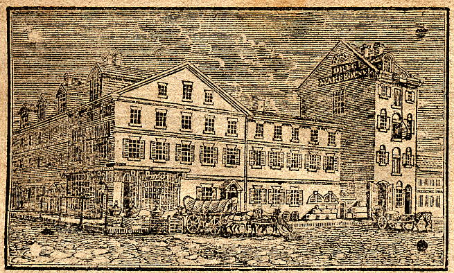

CORNER OF RACE AND WATER
The 1830 directory, in which the same numbering system theoretically was in place, contained a key to the numbering of corner properties and gives the following numbers for this corner:
#105 N. Water, northeastern corner.
#132 N. Water, northwestern corner.
#103 N. Water, southeastern corner.
#130 N. Water, southwestern corner.
BETWEEN WATER AND FRONT, SOUTH SIDE
The location of these four listings on this block is a guess based on numbering:
(1785) #4, Harvey, Sampson
(1791) #6 Sassafras St., Harvey, Sampson, ship chandler
(1791) #10 Sassafras St., Callaghan, James, huckster
(1785) #8, Anthony, Francis
(1791) #12 Sassafras St., Patterson, Sarah, spinster
(1785) #9, Wodman, Praise
(1791) #14 Sassafras St., Millat, Benjamin, mariner
(1785) #10, Rose, John
BETWEEN WATER AND FRONT, NORTH SIDE
(1785) #432, Flinton, John (assigned here by implication of #429 and #430)
(1791) #5 Sassafras St., Allibone, Thomas, flour merchant, also at 101 Vine St.
BETWEEN WATER AND FRONT, UNKNOWN SIDE
CORNER OF RACE AND FRONT
(1785) #429 Race Street, #62 Front Street, Moulder, William, clerk of the Market
(1785) Moulder, William, clerk of the city market, corner of Race and Front
(1791) #13 Sassafras St., Moulder, William, gentleman
By the numbering, at the northwestern corner.
(1785) #430 Race Street, Coppuck, Widow
(1791) #11 Sassafras St., Eley, John, schoolmaster
By the implication (not the proof) of #429, at the northeastern corner.
(1785) Shroudy, William, captain, corner of Race and Front
The 1830 directory, in which the same numbering system theoretically was in place, contained a key to the numbering of corner properties and gives the following numbers for this corner:
#137 N. Front, northeastern corner.
#9 Race, northwestern corner.
#135 N. Front, southeastern corner.
#118 N. Front, southwestern corner.
BETWEEN FRONT AND 2ND, SOUTH SIDE
(1785) #11, Gosner, George
(1785) Gosner, George, shoemaker, Race between Front and 2nd
(1791) #18 Sassafras St., Gosner, George, cordwainer
(1785) #12, Weaver, John, painter
(1785) #13, Wagglam, Peter
(1785) Waglom, Peter, bricklayer, Race between Front and 2nd
(1791) #20 Sassafras St., Waglom, Peter, bricklayer
(1785) #15, Dawson, Michael
(1791) #22 Sassafras St., Lombaert, Herman Joseph, merchant
(1791) #22 Sassafras St., Strong, Matthew, sea captain
(1785) #16, Brown, Nathaniel
(1791) #24 Sassafras St., Brown, Nathaniel, blacksmith
(1785) #17, Stephens, Walter
(1785) Stephen, Walter, mariner, Race between Front and 2nd
(1791) #26 Sassafras St., Stewart, Walter, mariner
(1791) #26 Sassafras St., Wartman, Abraham, butcher
(1785) #18, Warner, Charles
See also #417.
(1791) #28 Sassafras St., Wilson, John, boat builder, also at 95 N. Water St.
(1785) #19, Elfred, Josiah
(1785) Elfrey, Josiah, cabinetmaker, Race between Front and 2nd
(1791) #30 Sassafras St., Davis, William, mariner
(1785) #20, Robertson, James
(1785) Robinson, James, merchant, Race between Front and 2nd
(1791) #32 Sassafras St., Sharpless, Joseph, schoolmaster
(1785) #21, Thompson, Peter
(1785) Thompson, Peter, conveyancer, Race between Front and 2nd
(1791) #34 Sassafras St., Brown, William, boat builder, in alley
(1791) #34 Sassafras St., Fleming, John, weaver
(1791) #34 Sassafras St., Thomson, Peter, conveyancer
(1791) #34 Sassafras St., Thomson, Peter, jun., conveyancer
(1785) #22, Rouse, Isaac
(1785) Roush, Isaac, shopkeeper, Race between Front and 2nd
(1791) #36 Sassafras St., Davidson, William, mariner
(1791) #36 Sassafras St., Geyer, Jacob, taylor
(1785) #23, Gerard, Conrad
(1791) #38 Sassafras St., Emrich, George, baker
(1785) #24, Keehmle, George
(1785) Kehlme, George, hairdresser, Race between Front and 2nd
(1791) #40 Sassafras St., Hutman, George, barber
(1785) #25, Strong, Matthew
(1785) Strong, Matthew, captain, Race between Front and 2nd
(1791) #42 Sassafras St., Turner, Isabella, widow
(1785) #26, McNair, John
(1785) McNair, John, taylor, Race between Front and 2nd
(1791) #44 Sassafras St., McNair, John, taylor
(1785) #27, Kehr, Philip
(1791) #46 Sassafras St., Cossart, Theophilus, printer
(1791) #46 Sassafras St., Reap, Nicholas, cordwainer
(1785) #28, Kehr, Daniel
(1785) Kehr, Daniel, cordwainer, Race between Front and 2nd
(1791) #48 Sassafras St., no listing
(1785) #29, Parker, Nathaniel
(1785) Parker, Nathaniel, cordwainer, Race between Front and 2nd
(1791) #50 Sassafras St., Parker, Nathaniel, cordwainer
(1785) #30, Hunter, Widow
(1791) #52 Sassafras St., Gilbert, Conrad, joiner
(1785) #31, Danneberry, David
(1785) Danneberry, David, instrument maker, Race between 2nd and 3rd
(1791) #54 Sassafras St., Clifford, John, mariner
BETWEEN FRONT AND 2ND, NORTH SIDE
(1791) #53 Sassafras St., Kinsey, Philip, boardinghouse
(1791) #53 Sassafras St., Roush, John, skindresser
(1785) #410, Harden, Philip
(1785) Hardin, Philip, cordwainer, Race between Front and 2nd
(1791) #49 Sassafras St., Beck, Andrew, dyer
(1785) #411, Schnider, Christian
(1785) Schydner, Christian, Race between Front and 2nd
(1791) #47 Sassafras St., Snyder, Frederick, serjeant at arms of the Senate
(1785) #412, vacant or residents would not give name
(1791) #43 Sassafras St., Huff, Isaac, schoolmaster
(1785) #413, Rudolph, John
(1791) #41 Sassafras St., McKinley, Martha, widow
(1791) #41 Sassafras St., Stow, John, turner, also at 39 Bread St.
(1785) #414, Mills, Widow
(1791) #39 Sassafras St., Pidgeon, William, cordwainer
In 1791 there was only one widow Mills, a Catharine Mills in Branch Street, and likewise
in 1793, but then it was one Ann Mills, at #30 Stamper's Alley. However, Poulson's Almanac for 1795
contained a report on the yellow fever epidemic of 1793 which stated that the Widow Mills'
family "in Race Street, to the number of seven, were all ill with the fever, in the early
part of September..." Where exactly the Mills family in question was is therefore a mystery.
The account went on to note that they had, "had no other nurse but a black man, who visited them frequently every
day, but who had other families in the same manner under his care... The family suffered
extremely, till a young man, a nephew of the widow's, heard of their distress, and heroically
devoted himself to their relief... Two of the family died-- the rest recovered under his
affectionate care; but, a few days after, and under the same roof, he himself sunk a victim
to his own virtuous zeal. ... This young man's name was Charles Halden-- he had been an
apprentice to Joseph Budd, of this city, and was about twenty years of age."
(1785) #415, Vanvleck, Isaac, notary public
(1791) #37 Sassafras St., Gibbons, Joseph, merchant
(1785) #416, Jackson, Samuel
(1791) #35 Sassafras St., Fenton, Thomas, cordwainer
(1785) #417, Warner, Charles
(1785) Warner, Charles, hatter, Race between Front and 2nd
See also #18.
(1791) #33 Sassafras St., Stow, George, turner, also at 64 Sassafras
(1785) #418, Trumble, Joseph
(1791) #31 Sassafras St., Findlay, James, schoolmaster
(1791) #31 Sassafras St., Price, Sarah, schoolmistress
(1785) #419, Faulkner, Nathaniel, merchant
(1791) #29 Sassafras St., Falconer, Nathaniel, Captain, health officer
(1785) #420, Alexander, Widow
(1791) #27 Sassafras St., Glentworth, Peter S., doctor of physic
(1785) #421, Johnson, Widow
(1791) #25 Sassafras St., Johnston, Margaret, shopkeeper
(1785) #422, Kennard, Maynon
(1785) Kennerd, Mince, sailmaker, Race between Front and 2nd
(1791) #23 Sassafras St., Kennard, Elizabeth, shopkeeper
(1785) #423, Wardner, Joseph
(1785) Warner, Joseph, boatbuilder, Race between Front and 2nd
(1791) #21 Sassafras St., Chevalier, Mary, gentlewoman
(1785) #424, Montgomery, William
(1791) #19 Sassafras St., Jones, William, sea captain
(1785) #425, no listing
(1791) #17 Sassafras St., Rigby, Joseph, merchant
(1785) #426, Baker, George
(1785) Baker, George, merchant, Race between 2nd and 3rd
With a relatively common name like this, it's difficult to be certain whether an error was
made or whether there were two within a block of each other.
(1791) #15 Sassafras St., Brewster, William, sea captain
BETWEEN FRONT AND 2ND, UNKNOWN SIDE
(1785) Cosset, Theophilus, printer, Race between Front and 2nd
(1785) Griffin, Moses, captain, Race between Front and 2nd
(1785) Hellam, John, shopkeeper, Race between Front and 2nd
(1785) Jackson, Jeremiah, grocer, Race between Front and 2nd
(1785) Logan, Adam, cordwainer, Race between Front and 2nd
(1785) Loughead, Robert, captain, Race between Front and 2nd
(1785) Minchin, John, wine merchant, Race between Front and 2nd
(1785) Seitz, Charles, tanner, Race between Front and 2nd
(1785) Swap, Jacob, taylor, corner of Race and Key's Alley
Evidently a mistake; Race and Key's Alley were parallel, never meeting.
William Ketchum's Cabinetmakers of America, p.281, illustrates a label from Philadelphia cabinetmaker William Rigby (d.1796) giving his location as "Race Street, one door from Front Street." In both 1785 and 1791 he was on the west side of N. Front Street, about one address north of the corner of Front and Race. Ketchum also says that Rigby's son Henry Rigby, also a cabinetmaker, was in business c.1780-1790, but no Henry Rigby appears in any of the first three directories. A Henry Rigby, "late cabinetmaker" (suggesting that he'd just died) does appear in the 1823 directory of Philadelphia.
CORNER OF RACE AND 2ND
(1785) #32, Figgle, John, tavernkeeper
(1785) Fiegele, John, innkeeper; sign Dr. Franklin, corner of Race and 2nd
On the southeastern corner.
(1791) #56 Sassafras St., Homberg, Moses, innkeeper
(1785) #34, Maracke, Spencer
(1785) Marrache and Spencer, merchants, corner of Race and 2nd
On the southwestern corner.
(1785) #405, Razor, Widow
(1785) Razer, Mrs., innkeeper, corner of Race and 2nd
(1791) #57 Sassafras St., Roman, Catharine, shopkeeper
On the northwestern corner.
(1785) #407 Race, Wirtz, Christian and Son
(1785) Wirtz, Christian and Son, merchants, corner of Race and 2nd
(1791) #137 N. 2nd St., Davis, James, shopkeeper
On the northeastern corner.
According to the 1785 fire insurance survey of the Mutual Assurance Co. (the Green Tree),
published in The Mutual Assurance Company Papers, Vol. I, this was a three-story
building 19' by 40', with a three-story backbuilding also 19' by 40'; the survey-maker for
the Green Tree, Isaac Jones, remarked that the building was new. The image just below is the
northeastern corner of Race and 2nd Street in about 1820, when the engraving appeared in the
1820 advertisements in the Philadelphia newspaper The Union of the then tenant, the famous
(to students of early glass) Dr. Thomas W. Dyott.

The 1830 directory, in which the same numbering system theoretically was in place, contained a key to the numbering of corner properties and gives the following numbers for this corner:
#137 N. 2nd, northeastern corner.
#53 Race, northwestern corner.
#50 Race, southeastern corner.
#52 Race, southwestern corner.
BETWEEN 2ND AND 3RD, SOUTH SIDE
(1785) #37, Roush, John
(1785) Roush, John, skinner, Race between 2nd and 3rd
(1791) #58 Sassafras St., no listing
(1785) #38, Seitz, Charles
(1791) #60 Sassafras St., Seitz, Charles, currier
(1785) #39, Stow, George
(1791) #64 Sassafras St., Stow, George, turner, also at 33 Sassafras
(1791) #64 Sassafras St., Beck, Jacob, cordwainer
(1791) #64 Sassafras St., Fox, John, labourer
(1791) #64 Sassafras St., Roderfield, William, biscuit baker
(1785) #40, Naffe, Widow
(1785) Niff, Margaret, innkeeper, Race between 2nd and 3rd
(1785) #41, North, Joseph
(1791) #66 Sassafras St., North, Joseph, shopkeeper
(1785) #42, Keehmle, John
(1785) Kehlme, John, physician, Race between 2nd and 3rd
(1791) #68 Sassafras St., McCoy, Philip, labourer
(1785) #43, Mingle, John
(1791) #70 Sassafras St., Mingle, John, turner
(1785) #44, Peters, John & Co.
(1791) #72 Sassafras St., no listing
(1785) #45, Grube, Adam Bernard, reverend
(1785) Grube, Barnet, Reverend, minister, Race between 2nd and 3rd
(1791) #74 Sassafras St., Maiter, John, minister of the Moravian Congregation
(1785) #46, Kline & Reynolds
(1791) #76 Sassafras St., Burkhart, Frederick, cordwainer
(1785) #47, Savage, Lebanon
(1791) #78 Sassafras St., Anthony, Jacob, musical instrument maker
(1785) #48, Ozeas, Peter, grocer
(1791) #80 Sassafras St., Goldsmith, Frederick, joiner
(1791) #80 Sassafras St., Paxson, James, grocer
(1785) #49, Gravenstine, John
(1785) Gravenstine, John, grocer, Race between 2nd and 3rd
(1791) #82 Sassafras St., Gravenstine, John, shopkeeper
(1785) #50, Robinson, Widow
(1785) Robinson, Mrs., Race between 2nd and 3rd
(1791) #84 Sassafras St., Robenson, Rachel, widow
(1785) #51, Graham, William
(1791) #86 Sassafras St., Helm, John, shopkeeper
(1785) #52, Hist, John
(1785) Heist, John, shopkeeper, Race between 2nd and 3rd
There is also a John Hust, also a shopkeeper, listed by White for this block.
(1791) #88 Sassafras St., Hirst, John, shopkeeper
(1785) #53, Wilson, George, shopkeeper
(1785) Wilson, George, shopkeeper, Race between 2nd and 3rd
(1791) #90 Sassafras St., Phillips, Levi, shopkeeper
(1785) #54, vacant or residents would not give name
(1791) #92 Sassafras St., Wiltberger, Jacob, currier
(1785) #55, Rush, William
(1785) Rush, William, grocer, Race between 2nd and 3rd
(1791) #94 Sassafras St., Rush, William, grazier
BETWEEN 2ND AND 3RD, NORTH SIDE
(1785) #384, Rheiner, John
(1785) Rheiner, John, merchant, Race between 2nd and 3rd
(1791) #95 Sassafras St., Rush, Lewis, skindresser
(1785) #385, Harper, Lawrence
(1785) Hebbart, Lawrence, shopkeeper, Race between 2nd and 3rd
(1785) #386, Wyberg, Casper, reverend
(1785) Wezbeeg, Casper, Reverend, minister, Race between 2nd and 3rd
(1791) #93 Sassafras St., Herbert, Lawrence, shopkeeper
(1785) #387, Steiner, Melchior, printer
(1791) #89 Sassafras St., Moses, Sophia, widow
(1791) #89 Sassafras St., Peters, Philip, distiller
(1791) #89 Sassafras St., Strubell, John C., doctor of physic
(1791) #89 Sassafras St., Zeller, John, printer
(1785) #388, Haga, Godfrey, shopkeeper
(1785) Hager, Godfrey, shopkeeper, Race between 2nd and 3rd
(1791) #87 Sassafras St., Haga, Godfrey, grocer
(1791) #87 Sassafras St., Pryor, Norton, gentleman
(1785) #389, Esterly, George
(1785) Easterley, George, Green Tree, Race between 2nd and 3rd
(1791) #85 Sassafras St., Dill, Philip, accomptant
(1791) #85 Sassafras St., Thiel, Henry, innkeeper
(1785) #390, Rheiser, Jacob
(1785) Reizar, Jacob, tinsmith, Race between 2nd and 3rd
(1791) #83 Sassafras St., Elfrey, John, cedar cooper
(1785) #391, Shamcastle, Frederick
(1791) #81 Sassafras St., Star, George, baker
(1785) #392, Cooper, Peter
(1785) Cooper, Peter, shopkeeper, Race between 2nd and 3rd
(1791) #79 Sassafras St., Cooper, Peter, grocer
(1785) #393, Rheese, Jacob
(1785) Rees, Jacob, cedar cooper, Race between 2nd and 3rd
(1791) #77 Sassafras St., Rees, Jacob, cedar cooper
(1785) #394, Kneese, Christian
(1791) #75 Sassafras St., Williams, Thomas, joiner
(1785) #395, Yorick, Christian
(1791) #73 Sassafras St., Gravenstein, Peter, grocer
(1785) #396, Peters, John
(1791) #71 Sassafras St., Steiner, Melchior, printer
(1785) #398, Eberth, Jolts
(1791) #69 Sassafras St., Welcker, Jacob, innkeeper
(1785) #399, Engley, Paul
(1785) Engle, Paul, grocer, Race between 2nd and 3rd
(1791) #67 Sassafras St., Engle, Paul & Co., shopkeepers
(1785) #400, Hughs, Caleb
(1785) Hughes, Caleb, taylor, Race between 2nd and 3rd
(1791) #65 Sassafras St., Peter, George, currier
(1785) #401, Cooper & Redman, wine merchants
(1785) Cooper and Redman, grocers, Race between 2nd and 3rd
(1791) #63 Sassafras St., Keely, Matthias, merchant, also at 63 S. Water St.
(1785) #402, Frits, John
(1791) #61 Sassafras St., Bake and Comp, merchants
(1785) #403, Helm, John
(1791) #59 Sassafras St., Baker, Godfrey and Comp[any], stationers and book binders
BETWEEN 2ND AND 3RD, UNKNOWN SIDE
(1785) Brennice, Valentine, shopkeeper, Race between 2nd and 3rd
(1785) Brodegain, Philip, shopkeeper, Race between 2nd and 3rd
(1785) Brown, Nathaniel, blacksmith, Race between 2nd and 3rd
(1785) Bunner, Jacob, hatter, Race between 2nd and 3rd
(1785) Burckhard, Frederick, cordwainer, Race between 2nd and 3rd
(1785) Eddenbourne, Philip, shopkeeper, Race between 2nd and 3rd
(1785) Errbout, Joseph, innkeeper, Race between 2nd and 3rd
(1785) Friend, John, shopkeeper, Race between 2nd and 3rd
(1785) Garrard, Conrade, baker, Race between 2nd and 3rd
(1785) Gregor, John, cordwainer, Race between 2nd and 3rd
(1785) Hust, John, shopkeeper, Race between 2nd and 3rd
(1785) Jacobs, Barnet, shopkeeper, Race between 2nd and 3rd
(1785) Johnston, Ann, shopkeeper, Race between 2nd and 3rd
(1785) Krool, John, hairdresser, Race between 2nd and 3rd
(1785) Pennington, Isaac, sugar merchant, Race between 2nd and 3rd
(1785) Price, Sarah, schoolmistress, Race between 2nd and 3rd
(1785) Rose, John, bricklayer, Race between 2nd and 3rd
(1785) Shaw, Thomas, Dr., Race between 2nd and 3rd
(1785) Staer, George, baker, Race between 2nd and 3rd
(1785) Stimble, Nicholas, tobacconist, Race between 2nd and 3rd
(1785) Sutter, Peter, hatter, Race between 2nd and 3rd
(1785) Trumble, Francis, clerk, Race between 2nd and 3rd
(1785) Young, Christian, grocer, Race between 2nd and 3rd
CORNER OF RACE AND 3RD
(1785) #57 Race Street, #379 3rd Street, Garrigues & Pearson
(on 3rd between Arch & Race in White's directory)
(1791) #96 Sassafras St., Bunting, Philip, grocer, also at 113 Sassafras St.
On the southeastern corner.
(1785) #58 Race Street, Smith, Widow
(1785) Smith, Catharine, shopkeeper, corner of Race and 3rd
(1791) #98 Sassafras St., Betterton, Benjamin, grocer
On the southwestern corner.
(1785) #382 Race Street, Lehman, William
(1785) Leahman, William, taylor, corner of Race and 3rd
(1791) #99 Sassafras St., Shock, John, cordwainer
On the northwestern corner.
(1785) #383 Race Street, Coates, Thomas
(1785) Coates, Thomas, grocer, corner of Race and 3rd
(1791) #97 Sassafras St., Coates, Thomas, grocer
On the northeastern corner.
The 1830 directory, in which the same numbering system theoretically was in place, contained a key to the numbering of corner properties and gives the following numbers for this corner:
#99 Race, northeastern corner.
#101 Race, northwestern corner.
#94 Race, southeastern corner.
#96 Race, southwestern corner.
BETWEEN 3RD AND 4TH, SOUTH SIDE
(1785) #59, vacant or residents would not give name
(1791) #100 Sassafras St., Weckerly, Frederick, brass founder
(1785) #60, Bradisham, Daniel
(1785) #61, Bunner, Widow
(1785) Bonner, Mrs., gentlewoman, Race between 2nd and 3rd
(1791) #106 Sassafras St., North, Thomas, innkeeper
(1785) #63, Hay, Michael
(1785) Hay, Michael, sign King of Prussia, Race between 3rd and 4th
(1791) #108 Sassafras St., McGaw, Samuel, vice-provost [and] professory in the university
(1785) #64, Honey, George, jun.
(1785) Honey, George, clerk to the commissioners, Race between 3rd and 4th
(1791) #110 Sassafras St., Eddenbourn, Philip, flour factor
(1785) #65, vacant or residents would not give name
(1785) #66, Ellick, John
(1791) #112 Sassafras St., Ellick, Philip, taylor
(1785) #67, vacant or residents would not give name
(1791) #114 Sassafras St., Dupey, Daniel, silversmith
(1785) #68, Bewley, George, tavernkeeper
(1785) Bewly, George, innkeeper, sign Buck, Race between 3rd and 4th
(1791) #116 Sassafras St., Parrish, Robert, shopkeeper
(1785) #69, no listing
(1791) #118 Sassafras St., Hess, Nicholas, blacksmith
BETWEEN 3RD AND 4TH, NORTH SIDE
(1785) #367, Lapp, Lawrence
(1785) Lapp, Lawrence, broker, Race between 3rd and 4th
(1791) #129 Sassafras St., Lapp, Lawrence, baker
(1785) #368, vacant or residents would not give name
(1791) #127 Sassafras St., Jennings, John, clerk to the commissioners of bankruptcy and register of sweeps
(1791) #127 Sassafras St., Office of the Commissioners of Bankrupt
(1785) #369, Bowers, Andrew
(1785) Bowers, Andrew, captain, stonecutter, Race between 3rd and 4th
(1791) #125 Sassafras St., Rees, Jacob, jun., cedar cooper
(1791) #125 Sassafras St., Suez, Jacob, labourer
(1785) #370, Owen, Evan
(1791) #123 Sassafras St., Fisher, George, barber
(1785) #373, vacant or residents would not give name
(1791) #117 Sassafras St., Epple, Henry, innkeeper
(1785) #374, Zeller, Philip
(1791) #115 Sassafras St., Zeller, Daniel, currier
(1791) #115 Sassafras St., Zeller, Philip, grocer
(1785) #375, Roberts, Abraham
(1785) Roberts, Abraham, grocer, Race between 2nd and 3rd
(1791) #113 Sassafras St., Bunting, Philip, grocer, also at 96 Sassafras St.
(1785) #376, Coates, Septimus
(1791) #111 Sassafras St., Honey, George, jun., clerk to commissioners of Philadelphia county
(1791) #111 Sassafras St., Wallington, John, clerk
(1785) #377, Chovet, Abraham, doctor of physic
(1785) Chavet, Abraham, physician, Race between 2nd and 3rd
(1791) #109 Sassafras St., Lyons, Solomon, broker
(1785) #378, Biddle, Charles, Member of Council
(1791) #107 Sassafras St., Gratz, Bernard, merchant
(1791) #107 Sassafras St., Gratz, Michael, merchant
This was the Philadelphia home of the prominent Jewish merchants Michael (1740-1811) and Bernard
or Barnard Gratz (1738-1801), with (probably) Michael's wife Miriam (d.1808) and their many children. They were members
of the first Jewish congregation in Philadelphia, Mikveh Israel.
(1785) #379, Buffet, George
(1785) Buffet, George, perfumer, Race between 3rd and 4th
(1791) #105 Sassafras St., Beck, Andrew, jun., dyer
(1785) #380, Yager, John
(1791) #103 Sassafras St., Yeagar, John, cordwainer
(1785) #381, Fisher, George
(1785) Fisher, George, hairdresser, Race between 3rd and 4th
(1791) #101 Sassafras St., Howell, Joseph, Esq., pay master general of the United States
(1791) #101 Sassafras St., Weckerly, George, brass founder
BETWEEN 3RD AND 4TH, UNKNOWN SIDE
(1785) Balliot, Stephen, Esq., member of council, Race between 3rd and 4th
(1785) Chevalier, John, merchant, Race between 3rd and 4th
(1785) Dolby, John, cordwainer, Race between 3rd and 4th
(1785) Hess, Nicholas, blacksmith, Race between 3rd and 4th
(1785) Nailer, John, coppersmith, Race between 3rd and 4th
CORNER OF RACE AND 4TH
(1785) #70 Race Street, #218 4th Street, Keely, Matthias
(1785) Kelly, Matthias, grocer, corner of Race and 4th
(1791) #122 Sassafras St., Keely, George, grocer, also at 124 Sassafras St.
(1791) #124 Sassafras St., Keely, George, grocer, also at 122 Sassafras St.
By the numbering, on the southeast corner.
(1785) #72 Race Street, #58 4th Street (as Mindz), Mintz, William
(1785) Mentz, William, bookbinder, corner of Race and 4th
By the numbering and the implication of #70, on the southwest corner.
(1791) #126 Sassafras St., Helfenstein, Cathariner, widow
(1791) #130 Sassafras St., Droust, Martin
This alignment is somewhat speculative.
(1785) #60 4th Street, Kugler, Charles
(1785) #365, Knerr, Henry
(1785) Kugler, Charles, sign Seven Stars, corner of Race and 4th
(1785) Kneer, Henry, sign Seven Stars, corner of Race and 4th
(1791) #133 Sassafras St., Knerr, Henry, innkeeper
By the numbering, on the northwestern corner. This is a very curious double-listing.
Did the two men share the running of the tavern? Were they related?
(1785) #217 4th Street, vacant or residents would not give name
(1785) #366, Dolby, Joseph
By the numbering, this property would be on the northeast corner. Oddly, the occupants
of this property may have not responded (not been home?) when they were doing 4th Street,
but responded when they were doing Race Street, since the Joseph Dolby listing is in the
exact correct spot for this corner. If one of the
unmatched corner residents below ever advertised, this situation may become clearer.
(1791) #131 Sassafras St., Brown, George, tobacconist
(1785) Darroch, John, sadler, corner of Race and 4th
(1785) Gunckle, Michael, grocer, corner of Race and 4th
(1785) Inskip, John, merchant, corner of Race and 4th
The 1830 directory, in which the same numbering system theoretically was in place, contained a key to the numbering of corner properties and gives the following numbers for this corner:
#141 Race, northeastern corner.
#143 Race, northwestern corner.
#120 Race, southeastern corner.
#122 Race, southwestern corner.
BETWEEN 4TH AND 5TH, SOUTH SIDE
(1785) #73, vacant or residents would not give name
(1791) #132 Sassafras St., Blankford, John, blacksmith
(1791) #132 Sassafras St., Bryan, James, blacksmith
(1791) #132 Sassafras St., Cook, Susannah, widow
(1791) #132 Sassafras St., Halbury, Christopher, labourer
(1791) #132 Sassafras St., Knight, Charles, baker
(1791) #132 Sassafras St., Lewis, George, mariner
(1791) #132 Sassafras St., Sweney, Edward, labourer
(1785) #74, Jordan, David
(1791) #134 Sassafras St., Kellen, Isaac, cordwainer
(1785) #76, Whelper, George
(1791) #138 Sassafras St., Woelppert, George, butcher
(1785) #78, Singezer, Widow
(1791) #142 Sassafras St., Sengeissen, Elizabeth, widow
(1785) #79, Switzer, Martin
(1791) #144 Sassafras St., Schweitzer, Martin, labourer
(1785) #81, Hall, Philip
(1785) Hall, Philip, shopkeeper, Race between 4th and 5th
(1791) #146 Sassafras St., Hall, Philip, butcher
(1785) #82, Miltenberger, Michael
(1791) #148 Sassafras St., Claxton, Thomas, messenger to the House of Representatives of the United States
(1785) #83, Otenheimer, Philip
(1785) Oddenhymer, Philip, butcher, Race between 4th and 5th
(1791) #150 Sassafras St., Ottenheimer, Peter, butcher
The following four listings may have been on the corner of Race and 5th, or between 5th and 6th.
(1785) #90, vacant or residents would not give name
(1785) #93, Cloger, Henry
(1791) #164 Sassafras St., Deimer, Joseph, flour factor
(1785) #94, vacant or residents would not give name
(1791) #166 Sassafras St., Hoffman, Valentine, blacksmith
(1785) #99, Crouse, Jacob
(1791) #168 Sassafras St., Gross, Jacob, labourer
BETWEEN 4TH AND 5TH, NORTH SIDE
(1785) #348, vacant or residents would not give name
(1791) #169 Sassafras St., Eger, Catharine, widow
(1785) #351, Pennington, Edward
(1791) #159 Sassafras St., Penington, Edward, sugar refiner
(1791) #159 Sassafras St., Penington, Benjamin, gentleman
(1791) #159 Sassafras St., Penington, Edward, jun., gentleman
(1785) #353, Pennington, Edward
(1785) Pennington, Edward, sugar merchant, Race between 4th and 5th
(1791) #155 Sassafras St., Penington, Edward & Isaac, sugar refiners
(1785) #356, Hopkinson, Francis, Judge of the Admiralty
(1785) Hopkinson, Francis, judge of the court of admiralty, Race between 4th and 5th
(1791) #149 Sassafras St., Hopkinson, Francis, Esq. L.L.D., judge of the district of Pennsylvania
(1785) #360, Kugles, Charles
(1791) #141 Sassafras St., Kugler, Charles, innkeeper
(1785) #361, vacant or residents would not give name
(1791) #139 Sassafras St., Mechlin, Samuel, grocer, also at 137 Sassafras St.
(1785) #362, vacant or residents would not give name
(1791) #137 Sassafras St., Mechlin, Samuel, grocer, also at 139 Sassafras St.
(1785) #363, vacant or residents would not give name
(1791) #133 Sassafras St., Leacorn, John, painter
BETWEEN 4TH AND 5TH, UNKNOWN SIDE
(1785) Crapst, Henry, shopkeeper, Race between 4th and 5th
(1785) Earger, Philip, porter, Race between 4th and 5th
(1785) Ellick, John, taylor, Race between 4th and 5th
(1785) Gordon, David, sign Red Lion, Race between 4th and 5th
(1785) Hanse, Robert, labourer, Race between 4th and 5th
(1785) James, William, labourer, Race between 4th and 5th
(1785) Kennard, Jacob, wheelwright, Race between 4th and 5th
(1785) Knight, John, hatter, Race between 4th and 5th
(1785) Leesan, Stephen, taylor, Race between 4th and 5th
(1785) Lewis, George, shopkeeper, Race between 4th and 5th
(1785) Linton, William, Race between 4th and 5th
(1785) Lyons, Jonathan, shopkeeper, Race between 4th and 5th
(1785) Simmons, Joseph, taylor, Race between 4th and 5th
(1785) Steinser, Paul, Race between 4th and 5th
(1785) Tolbert, John, shopkeeper, Race between 4th and 5th
CORNER OF RACE AND 5TH
(1785) #344, Izonprice, John
(1785) #52 5th St., John Ironbrine
By the numbering, on the northwestern corner.
(1785) #347, Baker, Philip
(1791) #171 Sassafras St., Cooper, George, jun., grocer
By the numbering, on the northeastern corner.
(1785) Long, John, tallow chandler, corner of Race and 5th
The 1830 directory, in which the same numbering system theoretically was in place, contained a key to the numbering of corner properties and gives the following numbers for this corner:
#165 Race, northeastern corner.
#167 Race, northwestern corner.
#164 Race, southeastern corner.
#108 N. 5th, southwestern corner.
BETWEEN 5TH AND 6TH, SOUTH SIDE
(1785) #100, Lash, Zachariah, carpenter
(1785) Lush, Zachariah, house carpenter, Race between 5th and 6th
(1791) #170 Sassafras St., Lesher, Zachariah, house carpenter
(1785) #101, King, Tobias
(1791) #172 Sassafras St., Long, John, tallowchandler
(1785) #102, Hinchman, John
(1785) Hinsman, John, brickmaker, Race between 5th and 6th
(1791) #174 Sassafras St., Hersman, John, bricklayer
(1785) #103, Simon, John
(1791) #176 Sassafras St., Sulger, Jacob, baker
(1785) #104, Neiss, David, shopkeeper
(1785) Neas, David, shopkeeper, Race between 5th and 6th
Also see #331.
(1791) #178 Sassafras St., Neese, David, grocer
(1785) #106, vacant or residents would not give name
(1791) #180 Sassafras St., Fiss, Joseph, doctor of physic
(1785) #107, Goodman, Samuel
(1785) Goodman, Samuel, house carpenter, Race between 5th and 6th
(1791) #182 Sassafras St., no listing
(1785) #108, vacant or residents would not give name
(1791) #184 Sassafras St., Weedman, George, baker
(1785) #109, Wyner, Susannah
(1785) Wiennard, Susannah, tallow chandler, Race between 5th and 6th
(1791) #186 Sassafras St., Beyer, Adam, tinman
(1791) #186 Sassafras St., Cahoon, Josiah, bricklayer
(1791) #186 Sassafras St., Lex, Andrew, butcher
(1791) #186 Sassafras St., Snyder, Herman, joiner
(1791) #186 Sassafras St., Trigger, Jacob, cordwainer
(1785) #111, Wyner, Witrop (by implication of proximity of number to #109; not certain)
(1791) #188 Sassafras St., Sharp, Maria, shopkeeper
(1785) #112, no listing
(1791) #190 Sassafras St., Smallwood, William, sail maker
BETWEEN 5TH AND 6TH, NORTH SIDE
(1785) #328, Smallwood, William
(1785) Smallwood, William, shoemaker, Race between 5th and 6th
(1791) #207 Sassafras St., Burket, John, baker
(1791) #207 Sassafras St., Linck, Frederick, stone cutter
(1785) #329, Steinmetz, Conrad
(1785) Stouemeitz, Conrad, cooper, Race between 5th and 6th
(1791) #205 Sassafras St., Steinmetz, Conrad, cedar cooper
(1785) #330, Weaser, Jacob
(1791) #203 Sassafras St., Poushon, Peter, watchman
(1785) #331, Neiss, David
Also see #104.
(1791) #201 Sassafras St., Boyd, Alexander, inspector of customs
(1785) #332, vacant or residents would not give name
(1791) #199 Sassafras St., Ford, Lawrence, brass founder
(1791) #199 Sassafras St., Grozier, Lewis, trader
(1785) #333, Forrage, Widow
(1785) Fourrage, Mrs., innkeeper; sign the Rose, Race between 5th and 6th
(1791) #197 Sassafras St., Doodman, John, weaver
(1791) #197 Sassafras St., Many, Michael, carpenter
(1785) #334, May, Widow
(1785) Way, Mary, shopkeeper, Race between 5th and 6th
(1791) #195 Sassafras St., May, Mary, huckster shop
This was probably the Mary May that Francis White listed (also) as being on Vine between
4th and 5th.
(1785) #335, vacant or residents would not give name
(1791) #193 Sassafras St., Marshall, John, mariner
(1785) #336, no listing
(1791) #191 Sassafras St., Peters, Catharine, widow
(1785) #339, no listing
(1791) #185 Sassafras St., Abbott, Andrew, pump maker
(1785) #340, vacant or residents would not give name
(1791) #183 Sassafras St., Hansell, Jacob, blacksmith, also at 91 N. 6th St.
(1785) #342, Johnson, James
(1785) Johnson, James, house carpenter, Race between 5th and 6th
(1791) #179 Sassafras St., Johnston, James, house carpenter
(1785) #343, Byrnes, William
(1785) Burney, William, carter, Race between 5th and 6th
(1791) #177 Sassafras St., no listing
BETWEEN 5TH AND 6TH, UNKNOWN SIDE
(1785) Buck, Matthias, house carpenter, Race between 5th and 6th
(1785) Fiss, John, sailmaker, Race between 5th and 6th
(1785) Hoffman, Vallence, blacksmith, Race between 5th and 6th
(1785) King, Christian, house carpenter, Race between 5th and 6th
(1785) Meyers, John, cabinetmaker, Race between 5th and 6th
(1785) Rox, Andrew, butcher, Race between 5th and 6th
(1785) Woelper, George, gentleman, Race between 5th and 6th
CORNER OF RACE AND 6TH
(1791) #209 Sassafras St., Stroop, Henry, house carpenter
About in the right position to have been on the corner, but this is far from certain.
(1791) #213 Sassafras St., Stahl, Frederick, rope maker, also at 173 Mulberry St.
About in the right position to have been on the corner, but this is far from certain.
Any of the following three could have been on one of the southern corners:
(1791) #198 Sassafras St., Johnson, James, labourer
(1791) #200 Sassafras St., Dorsey, John, house carpenter
(1791) #202 Sassafras St., Cow, John, porter
The 1830 directory, in which the same numbering system theoretically was in place, contained a key to the numbering of corner properties and gives the following numbers for this corner:
#121 Race, northeastern corner.
No # ("Franklin Square"), northwestern corner.
#190 Race, southeastern corner.
#196 Race, southwestern corner.
BETWEEN 6TH AND 7TH, SOUTH SIDE
(1785) #119, Thredy, Lawrence
(1791) #204 Sassafras St., Heisz, Frederick, grocer, also at 189 High St.
(1785) #120, Jordan, Robert
(1785) Jordan, Robert, labourer, Race between 6th and 7th
(1791) #208 Sassafras St., Ryan, Adam, cordwainer
(1785) #128, Sherridan, Paul
(1785) Sheridan, Paul, sign Cross Keys, Race between 6th and 7th
Also see another Paul Sheridan listing at the corner of Race and 7th.
(1791) #210 Sassafras St., Hole, Pelic, labourer
The following listings are placed here as a guess:
(1791) #216 Sassafras St., Lawrence, Philip, joiner
(1791) #224 Sassafras St., Nichols, William, labourer
(1791) #232 Sassafras St., Paril, Nicholas, nailor
(1791) #234 Sassafras St., Brown, Rachel, widow
BETWEEN 6TH AND 7TH, NORTH SIDE
BETWEEN 6TH AND 7TH, UNKNOWN SIDE
(1785) Straggey, Lawrence, labourer, Race between 6th and 7th
CORNER OF RACE AND 7TH
(1785) Sheridan, Paul, blacksmith, corner of Race and 7th
Also see #128.
The 1830 directory, in which the same numbering system theoretically was in place, contained a key to the numbering of corner properties and gives the following numbers for this corner:
No # ("Franklin Square"), northeastern corner.
No # ("Franklin Square"), northwestern corner.
#238 Race, southeastern corner.
#240 Race, southwestern corner.
BETWEEN 7TH AND 8TH, SOUTH SIDE
The following five listings are placed here as a guess:
(1791) #240 Sassafras St., Shaw, George, joiner
Bjerkoe (in Cabinetmakers of America p.197) says that George Shaw
was born in 1750 and died in 1792, and that in 1791 his shop was at 127 Chestnut Street and
the property at 240 Sassafras (Race) St. was his home.
(1791) #242 Sassafras St., Painter, George, cordwainer
(1791) #244 Sassafras St., Rhoads, Mark, grocer
(1791) #250 Sassafras St., Taylor, John, Reverend, minister of the gospel
(1791) #252 Sassafras St., Painter, Adam, labourer
(1785) #148, Kerkhost, Christian
(1785) Kecarkhuff, Christian, steward of the hospital, Race between 7th and 8th
(1791) #258 Sassafras St., Kirckhuff, Christian, labourer
(1785) #149, Bergmyer, Daniel
(1791) #260 Sassafras St., Hoffman, Wolffgang, comb maker
(1791) #270 Sassafras St., Barton, Mary, widow
BETWEEN 7TH AND 8TH, NORTH SIDE
BETWEEN 7TH AND 8TH, SOUTH SIDE
BETWEEN 7TH AND 8TH, UNKNOWN SIDE
(1785) Harris, John, house carpenter, Race between 7th and 8th
(1785) Hoffman, Conrade, shopkeeper, Race between 7th and 8th
(1785) Prunner, George, musician, Race between 7th and 8th
(1785) Rossan, Charles, tallow chandler, Race between 7th and 8th
(1791) Ludwig, Martin, butcher, Sassafras St. between 7th and 8th
(1791) Verclas, Conrad, taylor, Sassafras St. between 7th and 8th St.
Note the Conrad Vereles at #275 in the block between 8th and 9th in 1785; Biddle's
usual reliability and the common practice of moving a short distance prevents this alignment,
but at the edge of town it was often difficult to tell who was on what block.
CORNER OF RACE AND 8TH
The 1830 directory, in which the same numbering system theoretically was in place, contained a key to the numbering of corner properties and gives the following numbers for this corner:
#271 Race, northeastern corner. Actually the numbers for the northern corners were transposed, but the correct order is clear.
#273 Race, northwestern corner.
#274 Race, southeastern corner.
#276 Race, southwestern corner.
BETWEEN 8TH AND 9TH, SOUTH SIDE
The location on this block of the following two listings is a guess based on numbering:
(1785) #192, Millar, Jacob
(1785) #195, Kinsley, Jacob
BETWEEN 8TH AND 9TH, NORTH SIDE
The location on this block of the following two listings is a guess based on numbering:
(1785) #274, vacant or residents would not give name
(1785) #275, Vereles, Conrad
BETWEEN 8TH AND 9TH, UNKNOWN SIDE
(1785) Freckless, Conrade, taylor, Race between 8th and 9th
(1785) Strouke, Jacob, blacksmith, Race between 8th and 9th
(1785) Taylor, Michael, taylor, Race between 8th and 9th
CORNER OF RACE AND 9TH
(1785) Newman, Frederick, band-box maker, corner of Race and 9th
The 1830 directory, in which the same numbering system theoretically was in place, contained a key to the numbering of corner properties and gives the following numbers for this corner:
#309 Race, northeastern corner. This was printed as #306; they evidently placed the piece of type representing the last digit in upside-down.
#311 Race, northwestern corner.
#318 Race, southeastern corner.
#344 Race, southwestern corner.
The numbers for the southern corners are as the key gives them, as improbable as they seem.
White's directory listings for Race Street end at the corner of Race and 9th Streets.
CORNER OF RACE AND 10TH
The 1830 directory, in which the same numbering system theoretically was in place, contained a key to the numbering of corner properties and gives the following numbers for this corner:
#349 Race, northeastern corner.
#351 Race, northwestern corner.
#7 Race, southeastern corner.
#9 Race, southwestern corner.
The meaning of the number given to the southern corners is a mystery.
CORNER OF RACE AND 11TH
The 1830 directory, in which the same numbering system theoretically was in place, contained a key to the numbering of corner properties and gives the following numbers for this corner:
No #, no listing, northeastern corner.
No # ("Waste"), northwestern corner.
No # ("Distillery"), southeastern corner.
No #, no listing, southwestern corner.
RACE BETWEEN 11TH AND 12TH
(1791) Sassafras St. between 11th and 12th St., Bowers, George, labourer
(1791) Sassafras St. between 11th and 12th St., Munsees, Dietrich, labourer
CORNER OF RACE AND 12TH
The 1830 directory, in which the same numbering system theoretically was in place, contained a key to the numbering of corner properties and gives the following numbers for this corner:
No # ("Grocery"), northeastern corner.
No # ("Waste"), northwestern corner.
No # ("Waste"), southeastern corner.
#420 Race, southwestern corner.
RACE BETWEEN 12TH AND 13TH
(1791) Sassafras St. between 12th and 13th St., Rummell, Michael, brick maker
CORNER OF RACE AND 13TH
The 1830 directory, in which the same numbering system theoretically was in place, contained a key to the numbering of corner properties and gives the following numbers for this corner:
No # ("Waste"), northeastern corner.
No # ("Tavern"), northwestern corner.
#154 Race, southeastern corner.
#156 Race, southwestern corner.
How these can be the correct numbers for the southern corners is a mystery.
1791 LISTINGS FURTHER WEST:
(1791) Sassafras St. between Water and Front St. from Schuylkill, Porter, William, merchant
(1791) Sassafras St. between Water & Front St. from Schuylkill, Graham, John, merchant
(1791) Sassafras St. between Water and Front St. from Schuylkill, McCormick, David, merchant
(1791) Sassafras St. near Schuylkill, Coyle, John, innkeeper
NOTES:
According to Rum Punch and Revolution by Peter Thompson, "Prior to the
1760s, the White Horse tavern was the unofficial headquarters of a horse-racing
community in Philadelphia whose penchant for conducting its meetings on Sassafras Street
resulted in the thoroughfare's becoming known as Race Street." (p.102) This does not
come right out and say that the White Horse tavern was on Race, but it implies it.
Bjerkoe (in Cabinetmakers of America p.181) says that the cabinetmaker
Benjamin Randolph married Anna Bromwich, the only daughter of William Bromwich, a staymaker
on Sassafras (Race) Street, on February 17, 1762.